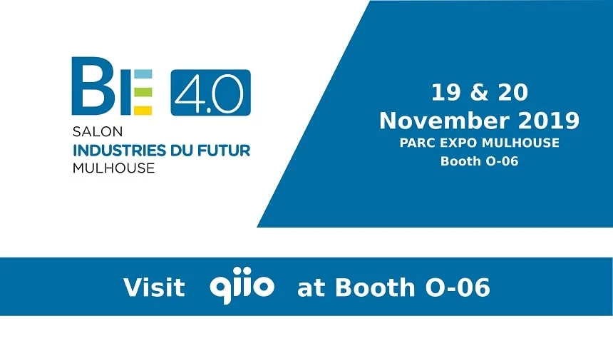

The i4Challenge focused on innovative solutions, new approaches and
sophisticated products in the field of Industry 4.0. A high-caliber jury of independent industry experts
evaluated and benchmarked applicants very thoroughly.
qiio Ltd. was among only six firms to receive a top award for our end-to-end IoT Solutions!
Take a look at the winner interview to know more about qiio and what Industry 4.0 means to us!
As part of the competition, qiio will present its solution at the Industry 4.0 trade fair (BE 4.0), where
more than 270 companies from Switzerland, France, Germany, Quebec, Spain and The Netherland will present
their innovation for Industry 4.0. Come to Parc Expo Mulhouse, booth O-06, from 19th to 20th November, and
explore the Internet of Things with qiio.